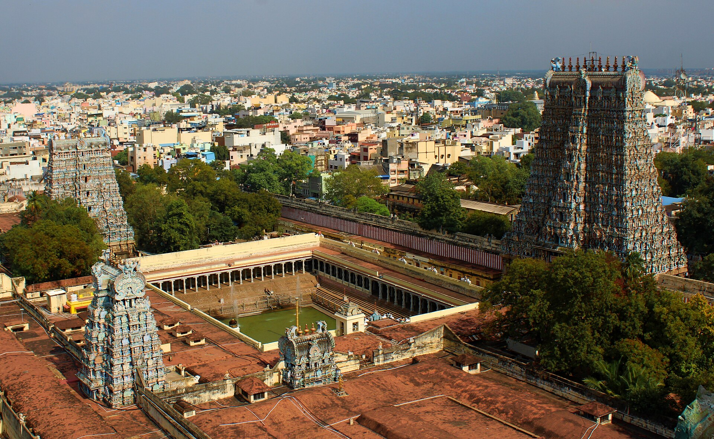

Meenakshi Amman Temple
A 2,500-year-old shrine to Goddess Meenakshi, crowned by fourteen soaring gopurams covered in thousands of vivid sculptures. Few places on earth feel as alive with devotion, music and colour.
Rising at the heart of Madurai's old city, the Meenakshi Amman Temple is one of India's most storied shrines. Its fourteen gopurams — some reaching over fifty metres — are covered in thousands of hand-carved figures, each painted in colours as vivid as a Kanjivaram border.
The temple honours the goddess Meenakshi, believed to be an incarnation of Parvati, and her consort Sundareswarar. For centuries, weavers, dancers and devotees have found inspiration in its halls — the same motifs of peacocks, mangoes and temple gopurams that recur in South Indian saree design were first seen carved into these walls.
For our family, no visit to Madurai is complete without stepping into the thousand-pillar hall at dawn. The scent of jasmine, the sound of the nadaswaram, the sight of a bride in her wedding Kanjivaram — it is where our craft feels most at home.
Visit Temple Site →